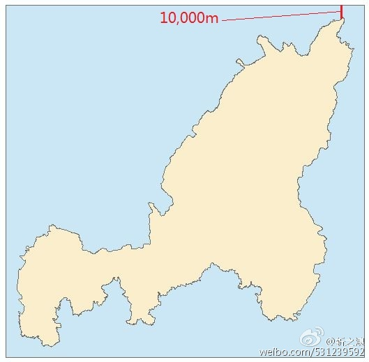
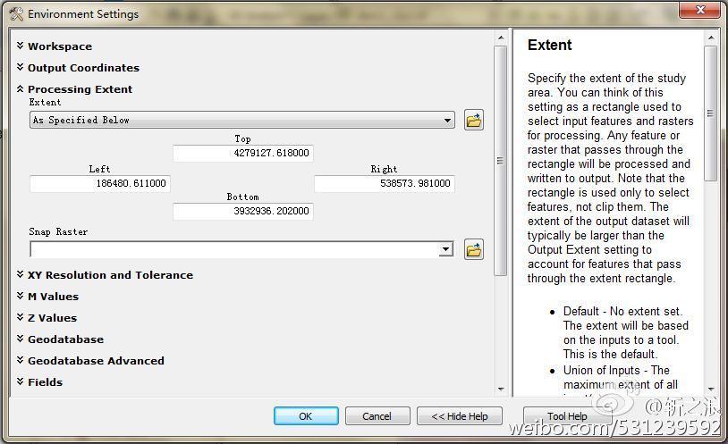
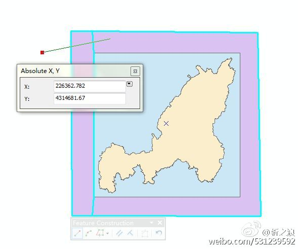
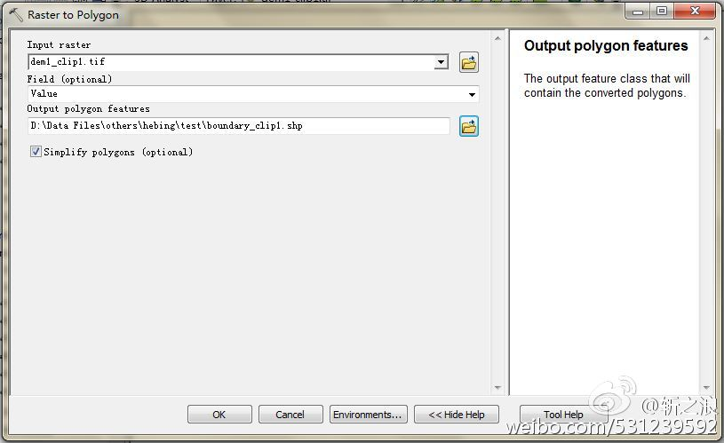
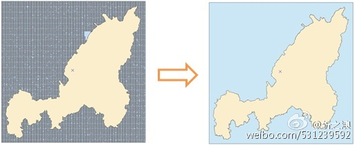

现有研究区矢量边界图层，要求将该区域遥感影像裁剪，裁剪边界范围距离研究区上下左右范围十公里（10,000m），如图，
在裁剪时输入边界范围，是个简单易行的方法，但是如果有大量遥感影像数据需要裁剪，所以在裁剪时逐个输入边界范围就十分耗时了，因此需要做一张固定范围的掩膜矢量图层，这边是题目所说的创建明确边界矩形矢量面。
创建明确边界矩形矢量面，可以想到的方法有多种，首先我们想到的应该是矢量裁剪，ArcToolBox->Analysis->Extract->Clip，但是，它需要裁剪框才能进行，并且输出的矢量和裁剪框的边界是完全相同的，这就实现不了我们想要的，在每个工具里都有Environment选项，
我们可以设置处理范围，输入明确的边界后，运行，结果仍无变化，只好放弃这一方法。
让我们想想简单的方法，不要想得复杂，在编辑菜单里，有我们熟悉的CutPolygons Tool
因此，我们可以事先画一个稍大范围的矢量面，确保将目的矩形包括，然后，选中矢量剪切工具，在矢量面范围外点一下，然后在矢量面内点击右键，选择Absolute X,Y出现下图界面
在文本框内输入目标边界的左上顶点，回车，然后右键同样的方法，输入左下顶点，回车，最后在矢量面外下侧点击一下，双击鼠标，便将图层左侧裁剪完毕，如上图所示裁剪线，然后用同样的方法将其他三个边裁剪，保留中央矩形，即为目标边界。
另外一种方法，既然我们可以裁剪出目标栅格矩形，那么我们就可以利用一下该裁剪后的栅格，直接将其转为矢量面，为我所用。
具体步骤为：利用栅格转矢量工具，Conversion Tools -> From Raster -> Raster to Polygon，
但在完成之后，我们可以看到它是由很多面元素组成，这在之后的处理中会使运行变慢，所以我们再对它进行合并，利用Editor菜单栏下的merge工具就可以了。
至此，我们已经有多种方法可以实现我们的目的，此外，还有几种不常用的方法，比如Advanced Editing中的标准矩形工具、草图工具等，同学们可以尝试一下。
Fighting GISer!
最新博文